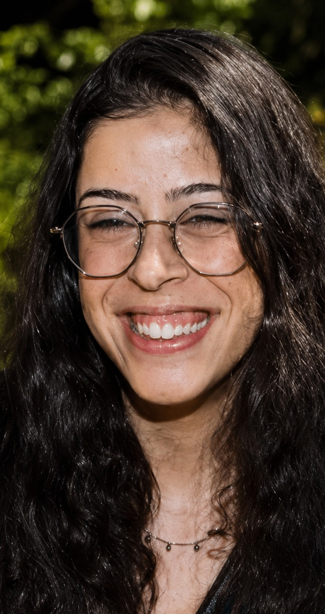

עובדת סוציאלית · מדריכת הורים · סטודנטית לתואר שני
עו״ס להט״ב בעיריית פתח תקווה
כותבת תזה בנושא משפחות לקהילה הלהט״בית, מתוך עניין בזהות, שייכות, בריאות הנפש ומערכות יחסים משפחתיות.

אני עובדת סוציאלית, מדריכת הורים וסטודנטית לתואר שני בעבודה סוציאלית. את התואר הראשון השלמתי באוניברסיטת תל אביב, ואת לימודי התואר השני אני משלימה באוניברסיטת אריאל.
בנוסף, אני בעלת תעודה בהדרכת הורים מטעם סמינר הקיבוצים. העבודה שלי משלבת ליווי רגשי, חשיבה מערכתית, מרחבים בטוחים ותמיכה במשפחות וביחידים.
יחסים משפחתיים, שייכות, קבלה ותהליכי שינוי.
ליווי רגשי, שיקום, תמיכה קהילתית ומערכתית.
משפחה, יציאה מהארון, זהות ומרחבים טיפוליים בטוחים.
מחקר העוסק בחוויות, קשרים ותהליכים משפחתיים סביב זהות ושייכות בקהילה הלהט״בית.